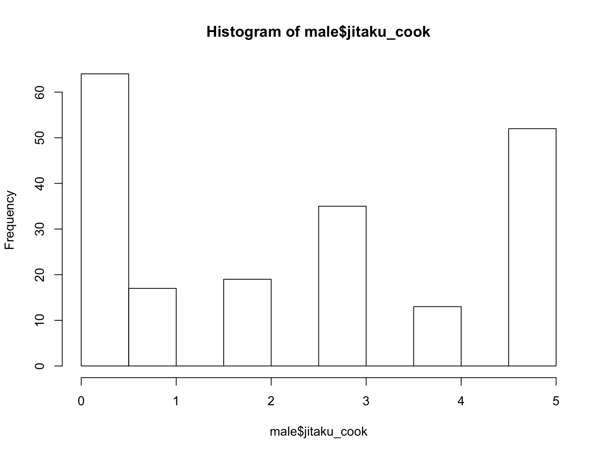
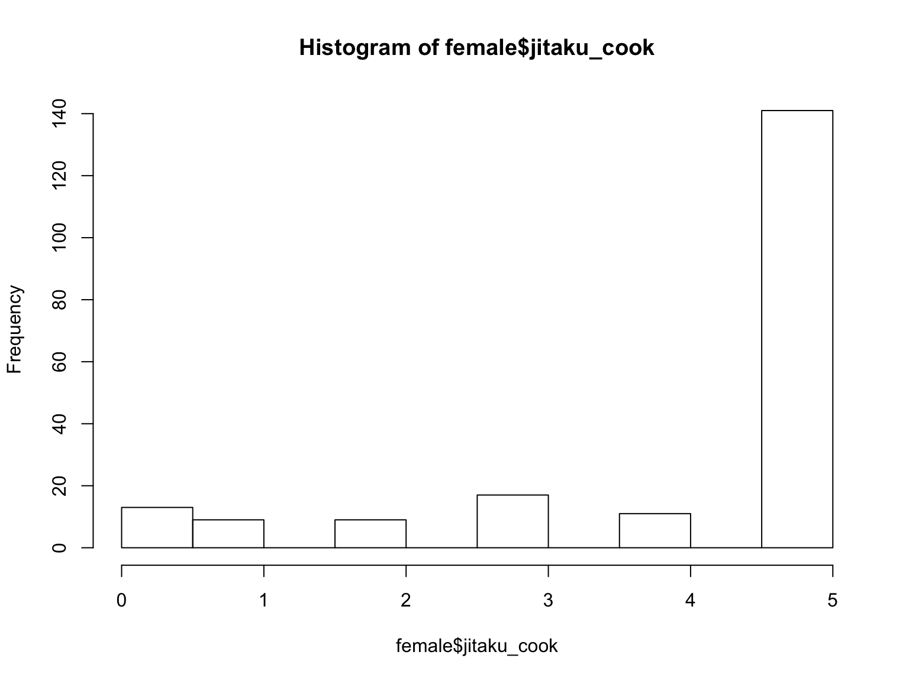
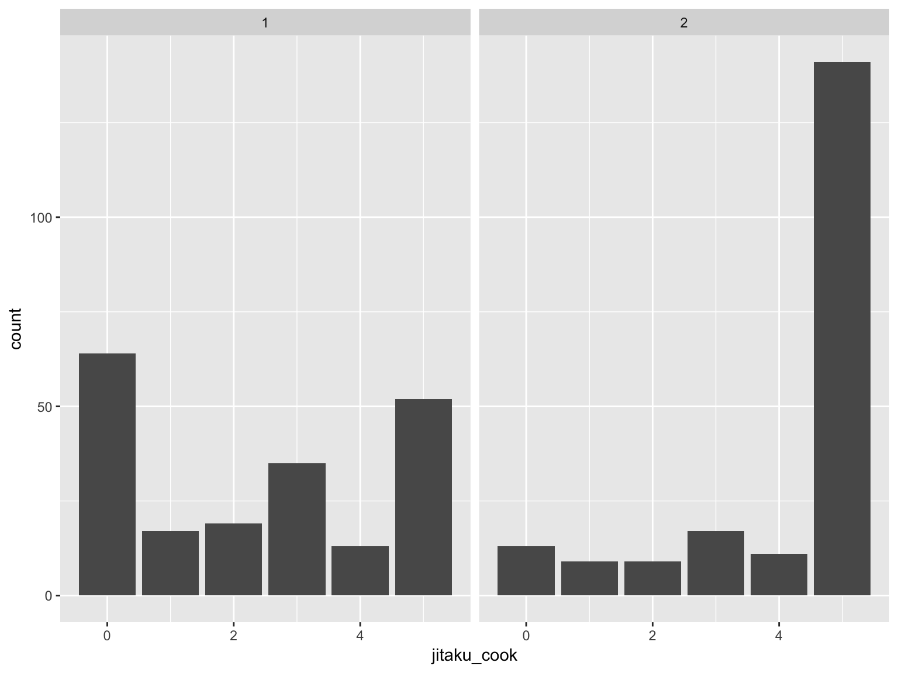
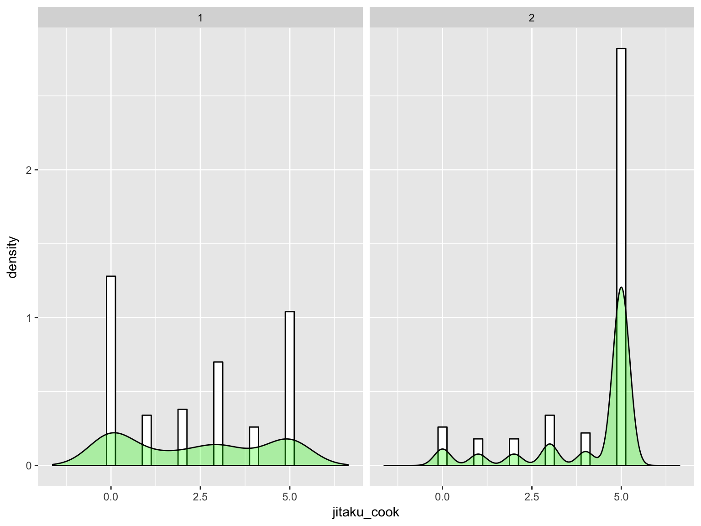
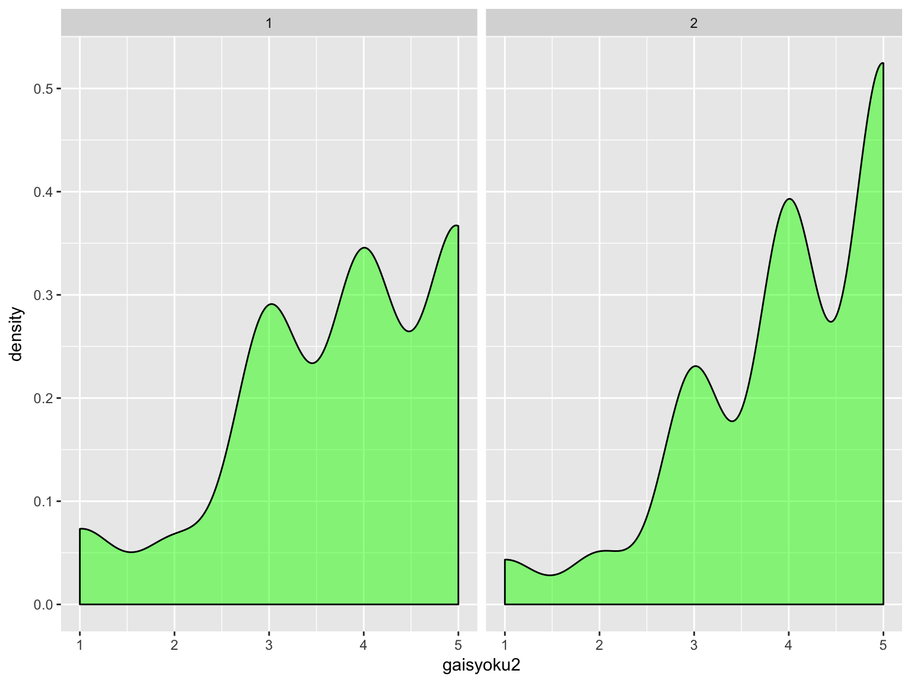
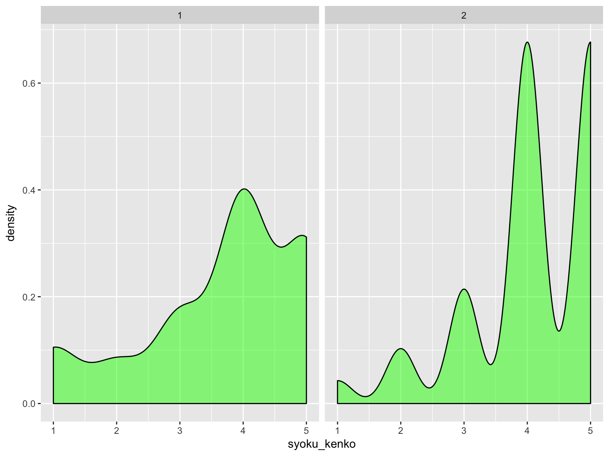
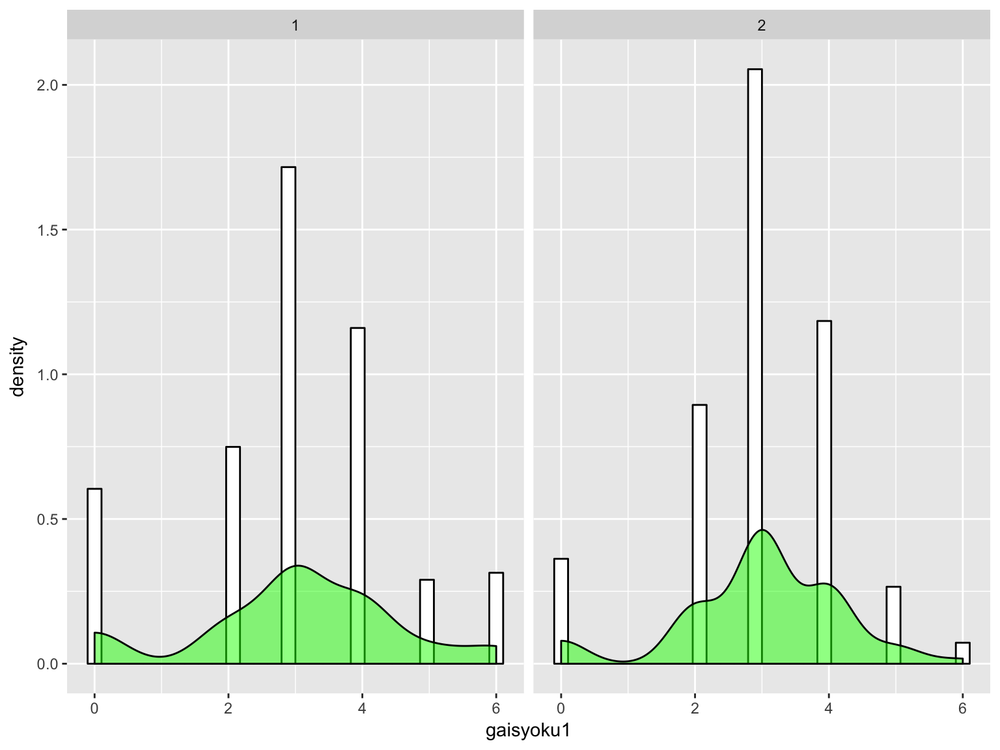

reidai <- read.csv("~/Dropbox/02-research/01-document/00JAIST/toukeibenkyou2017/reidai.csv")library(tidyverse)
# 入ってなければ，install.packages("tidyverse")
# library() のときは " " 不要。head(reidai)## id nendai sex age income marriage family syoku_kenko tyoshoku gaisyoku1
## 1 1 10dai 1 19 1 1 1 4 4 3
## 2 2 10dai 1 18 12 1 2 2 3 4
## 3 3 10dai 1 16 12 1 2 3 4 3
## 4 4 10dai 1 16 12 1 2 4 4 3
## 5 5 10dai 1 16 5 1 2 3 4 3
## 6 6 10dai 1 17 1 1 2 5 4 3
## gaisyoku2 jitaku_cook tokui
## 1 4 4 3
## 2 5 3 2
## 3 4 0 NA
## 4 4 3 2
## 5 4 0 NA
## 6 5 5 1male = filter(reidai, sex == 1)
female = filter(reidai, sex == 2)まずはヒストグラム（簡単な方法）
hist(male$jitaku_cook)
hist(female$jitaku_cook)
ggplot(reidai) + geom_bar(aes(x=jitaku_cook)) + facet_grid(. ~ sex)
参考までに（そこまでは不要かと思う）。

正規分布じゃないけど，今回は目をつぶろう…。
mean(male$jitaku_cook)## [1] 2.36mean(female$jitaku_cook)## [1] 4.135mean(male$jitaku_cook) - mean(female$jitaku_cook)## [1] -1.775t.test(male$jitaku_cook, female$jitaku_cook)##
## Welch Two Sample t-test
##
## data: male$jitaku_cook and female$jitaku_cook
## t = -9.8922, df = 374.26, p-value < 2.2e-16
## alternative hypothesis: true difference in means is not equal to 0
## 95 percent confidence interval:
## -2.127827 -1.422173
## sample estimates:
## mean of x mean of y
## 2.360 4.135P-values do not measure the probability that the studied hypothesis is true, or the probability that the data were produced by random chance alone.
Scientific conclusions and business or policy decisions should not be based only on whether a p-value passes a specific threshold.
A p-value, or statistical significance, does not measure the size of an effect or the importance of a result.

mean(male$gaisyoku2)## [1] 3.765mean(female$gaisyoku2)## [1] 4.055mean(male$gaisyoku2) - mean(female$gaisyoku2)## [1] -0.29t.test(male$gaisyoku2, female$gaisyoku2)##
## Welch Two Sample t-test
##
## data: male$gaisyoku2 and female$gaisyoku2
## t = -2.6343, df = 393.84, p-value = 0.008765
## alternative hypothesis: true difference in means is not equal to 0
## 95 percent confidence interval:
## -0.50643344 -0.07356656
## sample estimates:
## mean of x mean of y
## 3.765 4.055
mean(male$syoku_kenko)## [1] 3.68mean(female$syoku_kenko)## [1] 4.075mean(male$syoku_kenko) - mean(female$syoku_kenko)## [1] -0.395t.test(male$syoku_kenko, female$syoku_kenko)##
## Welch Two Sample t-test
##
## data: male$syoku_kenko and female$syoku_kenko
## t = -3.5053, df = 378.84, p-value = 0.0005107
## alternative hypothesis: true difference in means is not equal to 0
## 95 percent confidence interval:
## -0.6165704 -0.1734296
## sample estimates:
## mean of x mean of y
## 3.680 4.075
mean(male$gaisyoku1)## [1] 3.025mean(female$gaisyoku1)## [1] 2.99t.test(male$gaisyoku1, female$gaisyoku1)##
## Welch Two Sample t-test
##
## data: male$gaisyoku1 and female$gaisyoku1
## t = 0.25314, df = 377.59, p-value = 0.8003
## alternative hypothesis: true difference in means is not equal to 0
## 95 percent confidence interval:
## -0.2368641 0.3068641
## sample estimates:
## mean of x mean of y
## 3.025 2.990t.test(x, y, paired = T)taiouaru <- read.csv("~/Dropbox/02-research/01-document/00JAIST/toukeibenkyou2017/taiouaru2.csv")要約を見てみる。
summary(taiouaru)## id expenditure income
## Min. : 1.00 Min. : 0.000 Min. : 0.000
## 1st Qu.: 37.50 1st Qu.: 3.000 1st Qu.: 3.000
## Median : 74.00 Median : 5.000 Median : 5.000
## Mean : 73.43 Mean : 5.769 Mean : 5.301
## 3rd Qu.:109.50 3rd Qu.: 6.500 3rd Qu.: 7.000
## Max. :145.00 Max. :20.000 Max. :18.000t.test(taiouaru$expenditure, taiouaru$income, paired = T)##
## Paired t-test
##
## data: taiouaru$expenditure and taiouaru$income
## t = 2.0747, df = 142, p-value = 0.03982
## alternative hypothesis: true difference in means is not equal to 0
## 95 percent confidence interval:
## 0.02210418 0.91495876
## sample estimates:
## mean of the differences
## 0.4685315正規分布じゃないでしょ，と言われたら
Brunner-Munzel検定
library(lawstat)
brunner.munzel.test(male$jitaku_cook, female$jitaku_cook)##
## Brunner-Munzel Test
##
## data: male$jitaku_cook and female$jitaku_cook
## Brunner-Munzel Test Statistic = 10.794, df = 390.79, p-value <
## 2.2e-16
## 95 percent confidence interval:
## 0.7038697 0.7946803
## sample estimates:
## P(X<Y)+.5*P(X=Y)
## 0.749275